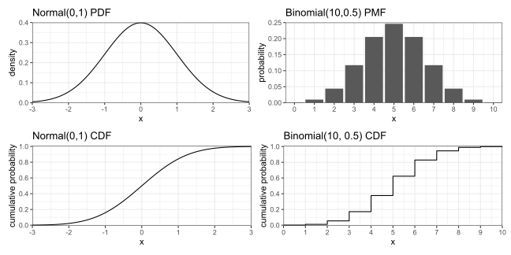
STAT340 - Topic 1: Probability
Concepts
- Probability theory
- Random variables
- Independence
- Conditional probability
- Bayes’ rule
- Distributions (PMF/PDF, CDF, inverse CDF)
- Expectation & variance
- Law of large numbers
- List of 340 RVs
- Covariance, correlation
Probability review
Suppose you have some random process, e.g. an experiment.
- An outcome is something that can be observed to happen,
- The set of all possible outcomes is denoted \(\Omega\)
- Subsets \(E\subseteq\Omega\), consisting of zero or more outcomes, are called events
Examples:
For flipping coins, \(\Omega=\{H,T\}\), event of “heads” \(=\{H\}\), event of “tails” \(=\{T\}\)
For rolling 6-sided die, \(\Omega=\{1,2,3,4,5,6\}\). Some examples of events:
- event: “getting a 6” \(=\{6\}\)
- event: “getting no more than 3” \(=\{1,2,3\}\), etc.
For measuring physical dimensions, e.g. masses or lengths, \(\Omega=[0,\infty)\)
Event operations
For two events \(A,B\subseteq\Omega\),
- The intersection \(A\cap B\) is the set of all outcomes in both \(A,B\), i.e. their overlap
- If intersection is empty, they are disjoint or mutually exclusive
- The union \(A\cup B\) is the set of all outcomes in either \(A,B\) or both, i.e. combining them
- The set difference \(A\backslash B\) is the set of outcomes in A but not B
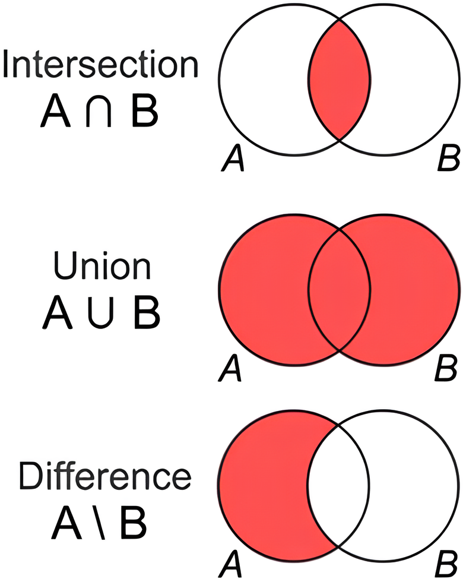
Exercise: roll a 6-sided die; let \(A=\) “even”, \(B=\) “at least 3”
- \(\Omega=\,\)\(?\) \(\{1,2,3,4,5,6\}\)
- \(A=\,\)\(?\) \(\{2,4,6\}\)
- \(B=\,\)\(?\) \(\{3,4,5,6\}\)
- \(A\cup B=\,\)\(?\) \(\{2,3,4,5,6\}\)
- \(A\cap B=\,\)\(?\) \(\{4,6\}\)
- \(A\backslash B=\,\)\(?\) \(\{2\}\)
- \(B\backslash A=\,\)\(?\) \(\{3,5\}\)
- \(\Omega\backslash(A\cup B)=\,\)\(?\) \(\{1\}\)
Venn in the wild
source: http://redd.it/1n5dulo/
Probability function
A probability function \(\pr\) assigns real numbers to events, following these axioms:
- Probability is nonnegative, i.e. \(\p E\ge0\) for any event \(E\)
- Probability of all outcomes is 1, i.e. \(\p\Omega=1\)
- Probability of union of disjoint events is the sum of probability of each,
i.e. if \(E_1\cap E_2=\emptyset\), then \(\p{E_1\cup E_2}=\p{E_1}+\p{E_2}\)
Together, these imply the following corollaries:
- Probability is always between \([0,1]\)
- Probability of the complement (opposite) event \(\p{E'}=1-\p E\)
- In general, for any events \(E_1,E_2\), probability of their union:
\(\p{E_1\cup E_2}=\p{E_1}+\p{E_2}-\p{E_1\cap E_2}\)
Exercise: suppose in CityTown, 70% of residents have a car, 40% have a bike, and 20% have both. How many have either a car OR a bike? How many have neither? Ans: 90%, 10%
Independence
Two events \(A,B\) are independent if \(\p{A\cap B}=\p A\cdot\p B\), which formalizes that knowing one event occurred gives no additional information about the other.
Example: suppose a 60-person class has these students:
| Freshmen | Sophomores | Juniors | |
|---|---|---|---|
| Male | 20 | 14 | 6 |
| Female | 10 | 6 | 4 |
Randomly draw a student from the class, and define:
- \(A=\) “student is male”
- \(B=\) “student is freshman”
- \(C=\) “student is sophomore”
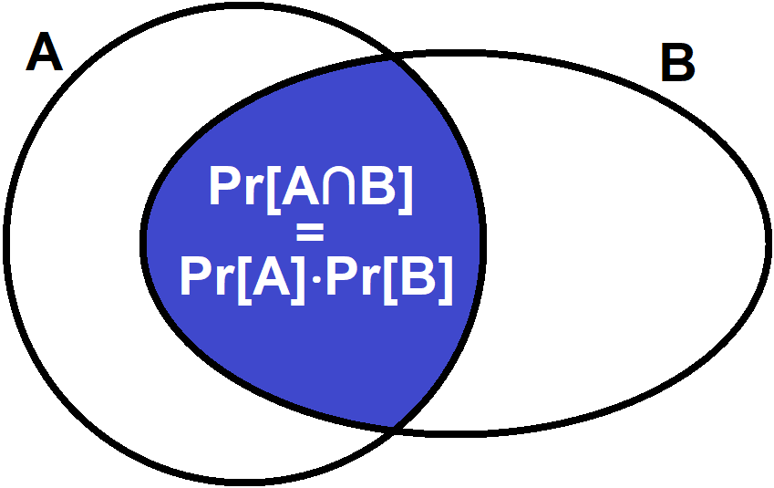
\(A,B\) independent since \(~\p{A\cap B}=\frac{20}{60}=\frac13=\frac23\cdot\frac12=\frac{40}{60}\cdot\frac{30}{60}=\p A\cdot\p B\)
\(A,C\) dependent since \(~~\;\,\p{A\cap C}=\frac{14}{60}=\!\frac{7}{30}\!\ne\frac23\cdot\frac13=\frac{40}{60}\cdot\frac{20}{60}=\p A\cdot\p C\)
Exercise: Are \(B,C\) independent? If not, is there a better phrase to describe them?
Conditional probability
The conditional probability of \(A\) given \(B\), written \(\p{A\mid B}\), refers to the probability of \(A\) occurring assuming \(B\) already occurred. It’s defined:
\[\p{A\mid B}=\frac{\p{A\cap B}}{\p B}\]
Example: roll a 6-sided die again; let \(A=\) “get 2”, \(B=\) “get even”
Then \(~\displaystyle\p{A\mid B}=\frac{\p{A\cap B}}{\p B}=\frac{\p{\{2\}}}{\p{\{2,4,6\}}}=\frac13\) ,
i.e. if we know the result is even, then there’s a 1 in 3 chance it’s a 2.
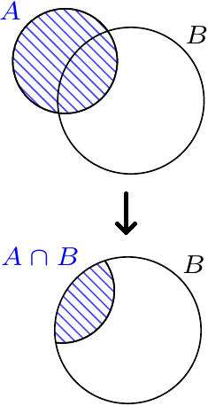
Note however: \(~\displaystyle\p{B\mid A}=\frac{\p{A\cap B}}{\p A}=\frac{\p{\{2\}}}{\p{\{2\}}}=1\) , since 2 is definitely even
Also note: \(~\displaystyle1-\p{A\mid B}=\frac{\p B}{\p B}-\frac{\p{A\cap B}}{\p B}=\frac{\p{A'\cap B}}{\p B}=\p{A'\mid B}\)
Conditional probability (cont.)
Consider a few special cases for events \(A,B\):
- \(A,B\) independent, then \(\displaystyle\p{A\mid B}=\frac{\p{A\cap B}}{\p B}=\frac{\p A\cdot\p B}{\p B}=\p A\)
i.e. knowing \(B\) occurred gives no additional information about \(A\)
- \(A,B\) mutually exclusive, then \(\displaystyle\p{A\mid B}=\frac{\p{A\cap B}}{\p B}=\frac0{\p B}=0\)
- \(B\subseteq A\), then \(\displaystyle\p{A\mid B}=\frac{\p{A\cap B}}{\p B}=\frac{\p B}{\p B}=1\), as seen previously
Exercise: a family with 2 kids has at least 1 boy; what’s the probability they have 2 boys?
Ans: \(\displaystyle\p{2B\mid\;\ge\!1B}=\frac{\p{2B\;\cap\ge\!1B}}{\p{\ge\!1B}}=\frac{\p{\{BB\}}}{\p{\{BB,BG,GB\}}}=\frac{1/4}{3/4}=\frac13\)
Importance of conditional probability

source: https://xkcd.com/795/
Bayes’ rule
Rearranging the conditional probability formula, we get this equivalence:
\[\p{A\cap B}=\p{A\mid B}\p B=\p{B\mid A}\p A\]
Rearranging again, we have \(~~\displaystyle\p{A\mid B}=\frac{\p{B\mid A}\p A}{\p B}\)
This is the simplest form of Bayes’ rule. Often, the denominator is expanded further: \[\p B=\p{B\cap A}+\p{B\cap A'}=\p{B\mid A}\p{A}+\p{B\mid A'}\p{A'}\]
The full form of Bayes’ rule: \(~~\displaystyle\p{A\mid B}=\frac{\p{B\mid A}\p A}{\p{B\mid A}\p{A}+\p{B\mid A'}\p{A'}}\)
But why? Bayes’ rule lets you flip a conditional,
i.e. you have \(B\) given \(A\) but you want \(A\) given \(B\)
Bayes’ rule exercise
Suppose a genetic condition occurs in roughly 1 out of 800 individuals (prevalence). A simple saliva test is available. If a person has the gene, the test is positive with 97% probability (sensitivity). If a person does not have the gene, a false positive occurs with 4% probability (false positive rate). A random person takes the test and gets positive, what’s the probability they have the genetic condition?
Hint: let \(G=\) “have genetic condition”, \(P=\) “test is positive”, we want \(~\p{G\mid P}\)
\[ \p{G\mid P}=\frac{\p{P\mid G}\p G}{\p{P\mid G}\p{G}+\p{P\mid G'}\p{G'}} \]
Ans:
\[ ~~~~~~~~~~~~~~~~~~~~~~~~=\frac{(.97)(1/800)}{(.97)(1/800)+(.04)(799/800)}\approx 0.0295 \]
A positive test has about 3% chance of being correct, due to the false positive rate being much higher than the rarity of the disease.
Bayes’ rule
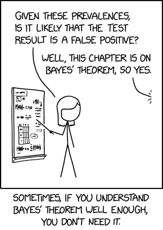
source: https://xkcd.com/2545/
Random variables, PMF/PDFs
A random variable (RV) \(X\) is a sample space \(\Omega\) with a probability function \(\pr\) that together represent outcomes of a random process and their associated probabilities. Two general categories of RVs: discrete & continuous.
- Discrete RVs, where all outcomes can be listed one at a time (list may be infinite)
- For discrete RVs, probability defined by probability mass function (PMF)
- Example: binomial
- Continuous RVs, where outcomes can be any value in a continuous range
- For continuous RVs, probability defined by probability density function (PDF)
- Example: normal
Note:
- PMFs output actual probabilities, PDFs output densities which are NOT probability (probabilities on PDFs are always areas of regions under the curve)
- PMFs and PDFs must satisfy all axioms of probability
RV examples
Discrete example: suppose \(X\) has the following PMF:
| \(k\) | 0 | 1 | 2 | 3 | 4 |
|---|---|---|---|---|---|
| \(\p{X=k}\) | 0.10 | 0.15 | 0.20 | 0.30 | 0.25 |
Exercises: 1. Check probability axioms are satisfied. 2. What’s the probability of getting an even result? 3. Can you make a plot of this PMF?
Continuous example: suppose \(X\) outputs a real number in \([0,2]\) with PDF \(f(x)=x/2\).
Exercises: 1. Again check the probability axioms. 2. What’s the probability of getting exactly 1? How about the probability of getting \(>\) 0.5?
3. Again, can you plot this PDF yourself?
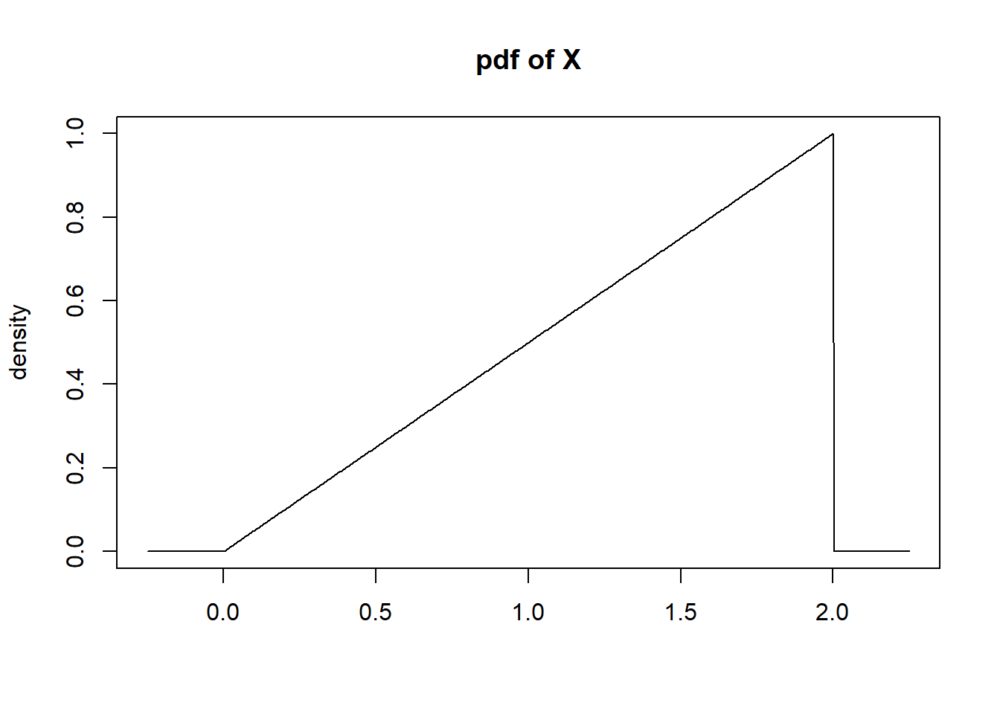
Cumulative distribution functions (CDFs)
For a RV \(X\) with a certain PMF/PDF, the cumulative distribution function (CDF) is defined
\[F_X(x)=\p{X\le x}\]
If \(F_X(x)=p\), then \(x\) is the \(p\)-th percentile of \(X\), i.e. the left-side integrated area under the PMF/PDF function from \(-\infty\) to \(x\) equals \(p\). (Note: \(X\) is the RV, \(x\) is the point!) Examples:
CDF (cont.)
Any CDF \(F(x)\) always satisfies these properties:
- \(F(-\infty)=0\), \(F(\infty)=1\)
- \(F\) is monotone non-decreasing from left to right, i.e. if \(a\le b\), then \(F(a)\le F(b)\)
- If the RV is continuous, then \(F\) is continuous
- If the RV is discrete, then \(F\) has a “staircase” shape, with steps beginning at each possible outcome and having a height equal to that outcome’s probability
Additionally, note that the CDF can be used to calculate probabilities of events:
\[ \p{a<X\le b}=F(b)-F(a) \]
Also recall for discrete variables, \(<\) vs \(\le\) and \(>\) vs \(\ge\) matters, but for continuous variables these are interchangeable, since probability of any single outcome \(\p{X=x}=0\)
PMF/PDF, CDF exercise
Match the following densities to their corresponding CDFs:
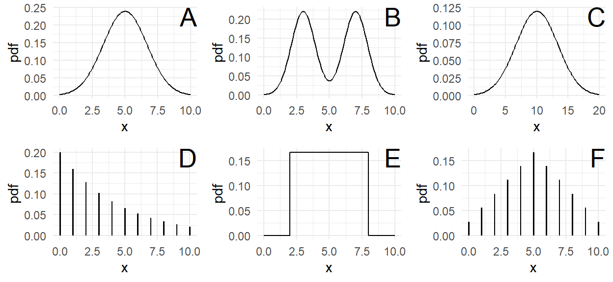
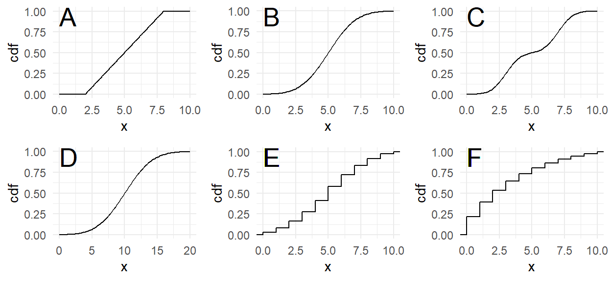
Densities A-F match in order: B, C, D, F, A, E
Inverse CDF (quantile)
The inverse CDF \(F^{-1}\), also called the quantile function, inverts the CDF, i.e. does the “opposite”. Given a probability \(p\), it finds the smallest \(x\) such that \(\p{X\le x}\ge p\),
i.e. it finds the smallest outcome \(x\) with at least \(p\) area to the left.
Note inverse is the opposite function that “undoes” it, NOT the reciprocal.
Exercise: What are the inverses of: 1. \(f(x)\!=\!x\!+\!1~\), 2. \(f(x)\!=\!x^2~\), 3. \(f(x)\!=\!e^x~\)?
The quantile function, opposite to the CDF, is defined on \([0,1]\) and outputs in \(\Omega\). Similar to the CDF, it’s continuous for continuous RVs and staircase-like for discrete RVs.
- In R, PMF/PDFs are the
d...()functions (d for density), e.g.dnorm(), - CDFs are the
p...()functions (p for percentile), e.g.pnorm(), - and inverse CDFs are the
q...()functions (q for quantile), e.g.qnorm().
Shiny demo: https://www.statlab.wisc.edu/shiny/bwu62/340/pdf-cdf/ (source)
Expectation
The expected value (EV) \(~\displaystyle\e X\!=\!\sum_x\,x\cdot\p{X=x}~\) or \(\mu\) is the theoretical mean of \(X\)
In general \(~\displaystyle\e{f(X)}\!=\!\sum_x\,f(x)\cdot\p{X=x}~\) gives the expectation of function \(f\) of \(X\)
If \(\e X\) exists, then the average of a large sample of independent observations will converge to it by the Law of Large Numbers (LLN). In other words, \(\bar x\to\e X\) as \(n\to\infty\)
Exercise: show EV of fair \(n\)-sided die with \(1,2,...,n\) on each side is \((n+1)/2\)
# Example: show convergence of sample mean
options(scipen=1) # suppress scientific notation
set.seed(1) # set seed for repeatability
n = 1e5 # roll 6-sided die (EV=3.5) n times
rolls = sample(6, size=n, replace=TRUE)
m = cumsum(rolls)/seq_along(rolls)
tibble(x=2:n,y=m[-1]) %>% ggplot(aes(x,y)) +
geom_hline(yintercept=3.5,color="red") +
geom_line() + scale_x_log10() +
scale_y_continuous(limits=c(2.5,4.5)) +
theme_bw(base_size=18) + labs(x="n",y="mean",
title="Running mean of 6-sided die rolls")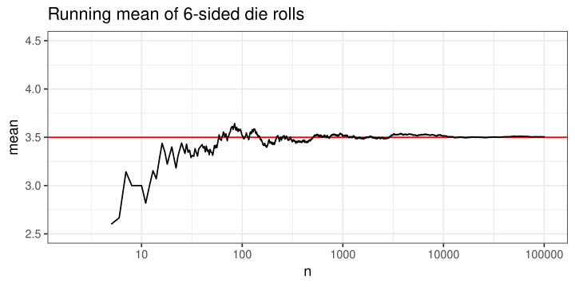
Variance
The variance \(~\displaystyle\v X=\e{(X-\mu)^2}=\sum_x\,(x-\mu)^2\cdot \p{X=x}~\) or \(\sigma^2\) is the mean squared distance of observations from \(\mu\). Its square root is called standard deviation or \(\sigma\).
Since this is also the average of a quantity, if it exists then by the LLN the sample variance \(\displaystyle S^2=\frac1{n-1}\sum_{i=1}^n(x_i-\bar x)^2\) converges to it, i.e. \(S^2\to\sigma^2\) as \(n\to\infty\).
Exercise: show variance of fair 6-sided die \(=35/12\approx2.92\)
# Example: show convergence of sample variance
set.seed(3) # set seed for repeatability
n = 1e5 # roll 6-sided die n times
rolls = sample(6, size=n, replace=TRUE)
m = cumsum(rolls)/seq_along(rolls)
v = cumsum((rolls-m)^2)/(seq_along(rolls)-1)
tibble(x=2:n,y=v[-1]) %>% ggplot(aes(x,y)) +
geom_hline(yintercept=35/12,color="red") +
geom_line() + scale_x_log10() +
scale_y_continuous(limits=c(.8,5)) +
theme_bw(base_size=18) + labs(x="n",y="mean",
title="Running variance of 6-sided die rolls")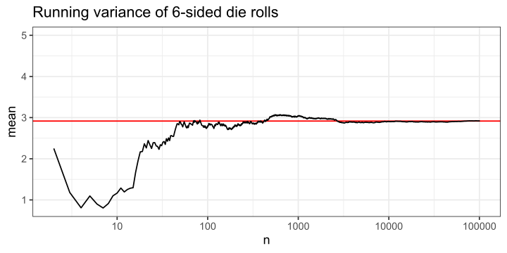
Continuous E, Var
For continuous \(X\), replace PMF and summation with PDF \(f(x)\) and integral
\[ \e X=\intO xf(x)\dx\qquad\v X=\intO (x-\mu)^2f(x)\dx \]
EX: show for previous example PDF \(f(x)\!=\!x/2\) over \([0,2]\) that \(\mu\!=\!4/3\), \(\sigma^2\!=\!2/9\)
\[ \begin{aligned} \e X&=\int_0^2x\left(\frac x2\right)\dx=\frac16x^3\,\bigg|_0^2~~=~\frac43\qquad\qquad\\[6pt] \v X&=\int_0^2\Big(x-\frac43\Big)^2\!\Big(\frac x2\Big)\dx\\ &=\frac12\int_0^2\Big[x^3-\frac83x^2+\frac{16}9x\Big]\dx\\ &=\frac12\bigg|\frac14x^4-\frac89x^3+\frac89x^2\bigg|_0^2~~=~\frac29 \end{aligned} \]
RVs covered in 340
- Discrete:
- Binomial
- Special case for \(n=1\) called Bernoulli
- Geometric
- Poisson
- Discrete uniform
- Binomial
- Continuous:
- Normal
- (Continuous) uniform
- Exponential
Binomial\((n,p)\)
Models number of successes in \(n\) independent trials, each with chance \(p\) of success
Examples: number of heads in flips, number of patients responding to treatment, etc.
Outcomes: 0, 1, …, n. Moments: \(~\mu=np\), \(~\sigma^2=np(1-p)\)
PMF: \(~\p{X=k}={n\choose k}p^k(1-p)^{n-k}\)
- \(n=1\) case called Bernoulli\((p)\)
Example:
Binomial\((10,0.5)\)
\(\mu=5\), \(~\sigma\approx1.58\)
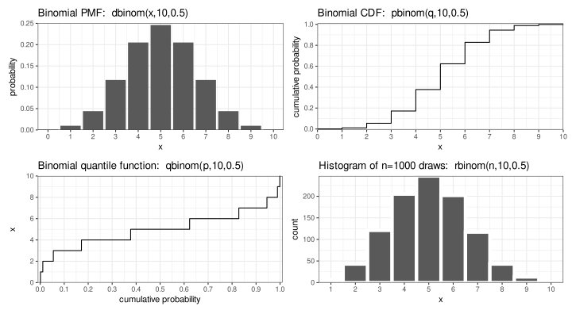
Geometric\((p)\)
Models number of trials before 1st success, each trial independently chance \(p\) of success
Examples: flipping coin until we get heads, number of tries before making a shot, etc.
Outcomes: 0, 1, 2, … . Moments: \(~\mu=(1-p)/p\), \(~\sigma^2=(1-p)/p^2\)
PMF: \(~\p{X=k}=p(1-p)^k\) , CDF: \(~\p{X\le k}=1-(1-p)^{\lfloor k\rfloor+1}\)
- Note: there’s a competing definition of “number of trials until first success, instead of before. We will prefer the before version!
Example:
Geometric\((0.5)\)
\(\mu=1\), \(~\sigma\approx1.44\)
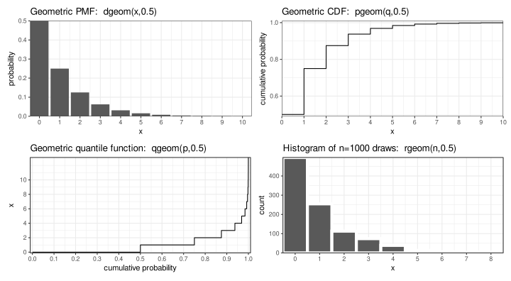
Poisson\((\lambda)\)
Models count of occurrences when events happen independently with average rate \(\lambda\)
Examples: number of fish caught on trip, number of weeds in certain area, etc.
Outcomes: 0, 1, 2, … . Moments: \(~\mu=\sigma^2=\lambda\)
PMF: \(~\p{X=k}=\lambda^ke^{-\lambda}/k!\)
- \(\lambda\) usually defined over some amount of time/ space/etc & scales with it
- Can be derived from limit of binomial, see: https://mathcenter.oxford.emory.edu/site/ math117/connectingPoissonAndBinomial
Example: Poisson\((5)\), i.e. something happening on average 5 times per ____
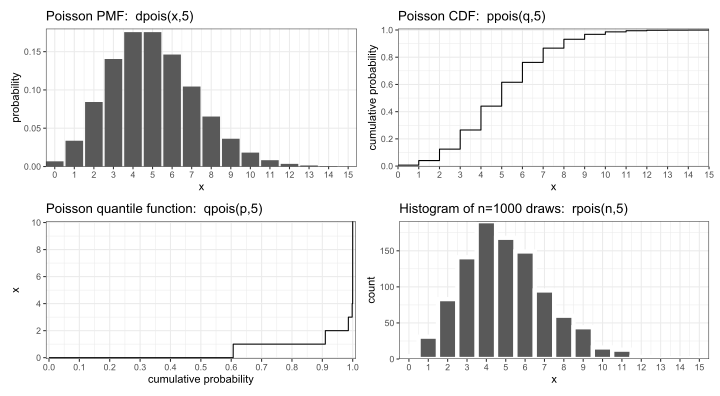
Discrete uniform\((a,b)\)
Models \(n\)-sided fair die with integers \(a,a\!+\!1,...,b\) on it (note \(n=b-a+1\))
Other examples: lottery draws, seconds value when you check the time, etc.
Outcomes: \(a\), \(a\!+\!1\), …, \(b\). Moments: \(~\mu=(a+b)/2\), \(~\sigma^2=(n^2-1)/12\)
PMF: \(~\p{X=k}=1/n\)
Example:
Discrete uniform\((1,6)\), i.e. fair 6-sided die roll
(using extraDistr package)
\(\mu=3.5\), \(~\sigma\approx1.71\)
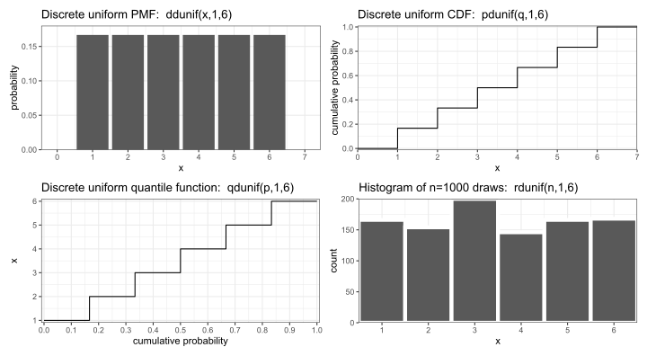
Normal\((\mu,\sigma^2)\)
Most things that are the sum or mean of many smaller independent components are well modeled by the normal (due to the Central Limit Theorem)
Outcomes: \((-\infty,\infty)\). Moments: \(~\mu=\mu\), \(~\sigma^2=\sigma^2\)
PDF: \(~f(x)=\frac1{\sigma\sqrt{2\pi}}e^{-\frac12\left(\frac{x-\mu}\sigma\right)^2}\)
- Note: in 340, we will prefer the parametrization Normal\((\mu,\sigma^2)\) instead of Normal\((\mu,\sigma)\) from 240
- Remember empirical rule: 68/95/99.7% of data within ±1/2/3 SDs
Example:
Normal\((0,1)\), i.e. the
standard normal \(Z\)
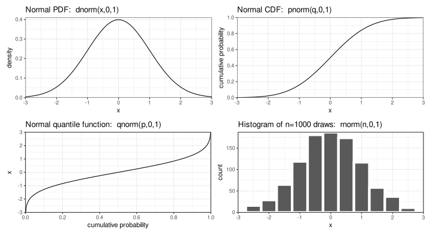
(Continuous) Uniform\((a,b)\)
Continuous version of discrete uniform, models when anything in \([a,b]\) equally likely
Examples: arbitrary angles, percentiles (more on this later), etc.
Outcomes: \([a,b]\). Moments: \(~\mu=(a+b)/2\), \(~\sigma^2=(b-a)^2/12\)
PDF: \(~f(x)=1/(b-a)\) , CDF: \(~F(x)=(x-a)/(b-a)\)
Example: Uniform\((0,1)\)
\(\mu=0.5\), \(~\sigma^2=1/12\)
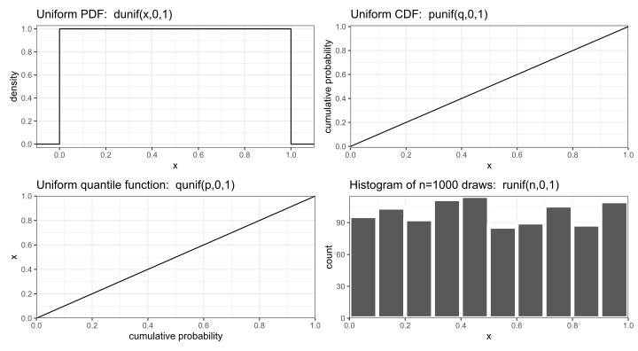
Exponential\((\lambda)\)
Continuous version of geometric, models wait time between Poisson\((\lambda)\) events
Examples: time between earthquakes, time between calls at call center, etc.
Outcomes: \([0,\infty)\). Moments: \(~\mu=1/\lambda\), \(~\sigma^2=1/\lambda^2\)
PDF: \(~f(x)=\lambda e^{-\lambda x}\) , CDF: \(~F(x)=1-e^{-\lambda x}\)
Example: Exponential\((1)\)
\(\mu=1\), \(~\sigma^2=1\)
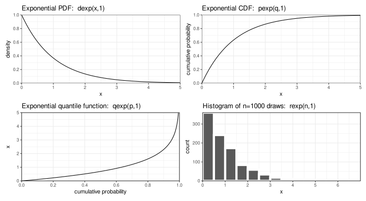
RV exercises
- Which RVs always have P(X=0) > 0?
Choose ALL that apply!- Normal
- Uniform
- Exponential
- Poisson
- Geometric
- Which RVs always have P(X=0) > 0?
Choose ALL that apply!- Normal
- Uniform
- Exponential
- Poisson \(\p{0}\!=\!e^{-\lambda}\)
- Geometric \(\p{0}\!=\!p\)
- Which RVs have the largest mean? If multiple are tied, choose ALL that apply!
- Binomial(20,0.2)
- Normal(4,4²)
- Geometric(0.2)
- Poisson(4)
- Exponential(0.25)
- Which RVs have the largest mean? If multiple are tied, choose ALL that apply!
- Binomial(20,0.2)
- Normal(4,4²)
- Geometric(0.2)
- Poisson(4)
- Exponential(0.25) (all have mean 4)
- For each, choose ONE RV as the BEST model, using each RV no more than once!
RVs: Bernoulli, Binomial, Geometric, Poisson, Normal, Discrete uniform, Exponential.- Number of days since the last injury at a factory.
- Number of students in a class who fail.
- Scores of students on a standardized exam.
- Rank of card drawn from shuffled standard (52-card) deck.
- Whether or not your classmate John Smith gets an A.
- For each, choose ONE RV as the BEST model, using each RV no more than once!
RVs: Bernoulli, Binomial, Geometric, Poisson, Normal, Discrete uniform, Exponential.- Number of days since the last injury at a factory: Geometric
- Number of students in a class who fail: Binomial (if \(\mu\) small, poisson may work too)
- Scores of students on a standardized exam: Normal
- Rank of card drawn from shuffled standard (52-card) deck: Discrete uniform
- Whether or not your classmate John Smith gets an A: Bernoulli
Independence of RVs
Like events, RVs can also be dependent or independent. For RVs \(X\), \(Y\), they are independent if any two events related to them are also independent.
I.e. if for any two events \(E_X\subseteq\Omega_X\), \(E_Y\subseteq\Omega_Y\) relating to \(X\), \(Y\) it’s true that: \[ \p{X\in E_X, Y\in E_Y}=\p{X\in E_X}\p{Y\in E_Y} \] Then \(X\), \(Y\) are independent. Otherwise, they’re dependent.
We often assume observations in samples are independent & identically distributed (iid). E.g. suppose \(n\) students take an exam with scores normalized to have mean 100 and sd 15. We might say: let \(X_1,X_2,\ldots,X_n\) be students’ exam scores where \[ X_i\iid\norm{100,15^2} \] Then for any two students \(X_i\), \(X_j\) and any two events \(E_i\), \(E_j\), we have \[ \p{X_i\in E_i, X_j\in E_j}=\p{X_i\in E_i}\p{X_j\in E_j} \]
Expectation properties
It’s easy to show E is linear. Let \(X\) be a discrete RV and \(a\), \(b\) be constants. Then: \[ \begin{align} \e{aX+b}&=\sum_x(ax+b)\p{X=x}\\ &=a\sum_xx\p{X=x}+b\sum_x\p{X=x}\\ &=a\e X+b \end{align} \]
Replacing summations with integrals completes the proof for continuous RVs. Similarly you can show for both discrete and continuous RVs for any RVs \(X\), \(Y\) that: \[ \e{X+Y}=\e X+\e Y \] These are the defining properties of a linear function
Variance properties
Var is a bit odd. Let \(X\) be an RV (discrete or continuous) and \(a\), \(b\) be constants. Then:
\[ \begin{align} \v{aX+b}&=\e{(aX+b-\e{aX+b})^2}\\ &=\e{(aX-a\e X)^2}\\ &=a^2\e{(X-\mu)^2}~=~a^2\v X \end{align} \]
How about sums of variables? Let \(X\), \(Y\) be RVs, then: \[ \begin{align} \v{X+Y}&=\e{(X+Y-\e{X+Y})^2}\\ &=\e{((X-\e X)+(Y-\e Y))^2}\\ &=\e{(X-\e X)^2+(Y-\e Y)^2+2(X-\e X)(Y-\e Y)}\\ &=\v X+\v Y+2\cov{X,Y}\\ \end{align} \]
Where the covariance of \(X\), \(Y\), i.e. \(\cov{X,Y}\!=\!\e{(X\!-\!\e X)(Y\!-\!\e Y)}\) describes how much \(X\), \(Y\) change together or apart.
If \(X\), \(Y\) are independent, then \(~\cov{X,Y}\!=\!0~\) and \(~\v{X\!+\!Y}\!=\!\v X\!+\!\v Y\)
Covariance, correlation, independence
The covariance is actually related to the correlation coefficient \(\rho_{X,Y}\), which is defined: \[ \rho_{X,Y}=\frac{\cov{X,Y}}{\sqrt{\v X\v Y}} \]
Important note: \(X\), \(Y\) independent implies \(\cov{X,Y}=0\), but the opposite is NOT true!
Ex: let \(X\) be discrete uniform\((-1,1)\), let \(Y\!=\!X^2\). Show \(X\), \(Y\) uncorrelated but dependent
Ans: \(\small\cov{X,Y}\!=\!\e{(X\!-\!\e X)(Y\!-\!\e Y)}\!=\!\e{X(X^2\!-\!\tfrac23)}=\cancel{\e{X^3}}\!-\!\tfrac23\cancel{\e{X}}\!=0\), but
\(\small\p{X\!=\!1,Y\!=\!1}\!=\!\frac13\) whereas \(\small\p{X\!=\!1}\!\cdot\!\p{Y\!=\!1}\!=\!\frac13\!\cdot\!\frac23\!=\!\frac29\), so uncorrelated but dependent
Additional exercises for home: (hint: remember \(\mu\), \(\sigma^2\) are always constants for any RV!)
- Show also \(\cov{X,Y}=\e{XY}-\e X\e Y\)
- Show also \(\v X=\e{X^2}-(\e X)^2\)
Summary of identities
\[ \begin{align} \e{aX+b}&=a\e X+b\\[3pt] \e{X+Y}&=\e X+\e Y\\[3pt] \v X&=\e{X^2}-(\e X)^2\\[3pt] \v{aX+b}&={\small a^2}\v X\\[3pt] \v{X+Y}&=\v X+\v Y+2\cov{X,Y}\\[3pt] \cov{X,Y}&=\e{(X-\e X)(Y-\e Y)}\\[3pt] &=\e{XY}-\e X\e Y=\rho_{X,Y}\cdot\sigma_X\cdot\sigma_Y\\[6pt] \text{If $X,Y$ independent}&\text{, then additionally:}\\[2pt] \cov{X,Y}&=0\\[3pt] \v{X+Y}&=\v X+\v Y\\[3pt] \e{XY}&=\e X\e Y \end{align} \]
Central limit theorem (CLT)
The CLT crucially explains why the normal distribution is so useful. The common version:
Let \(X_1,...,X_n\) be iid with \(\;\e{X_i}\!=\!\mu\), \(\;\v{X_i}\!=\!\sigma^2\!<\!\infty\), then as \(n\to\infty\), \[\bar X\sim\norm{\mu,\tfrac{\sigma^2}n}\]
The normality part is nontrivial to prove and beyond our scope, but the expectation and variance are relatively easy for us to show:
\[ \begin{align} \e{\bar X}&=\E{\frac1n\sum_{i=1}^nX_i}\\ &=\frac1n\sum_{i=1}^n\e{X_i}\\ &=\frac1n\sum_{i=1}^n\mu\\ &=\frac1n(n\mu)~=~\mu \end{align} \]
\[ \begin{align} \v{\bar X}&=\V{\frac1n\sum_{i=1}^nX_i}\\ &=\frac1{n^2}\sum_{i=1}^n\v{X_i}~~~\text{(since $X_i$ iid)}\\ &=\frac1{n^2}\sum_{i=1}^n\sigma^2\\ &=\frac1{n^2}(n\sigma^2)~=~\frac{\sigma^2}n \end{align} \]
Bonus: Bessel’s correction
We can now actually prove that \(S^2=\tfrac1{n-1}\sum(X_i-\bar X)^2\) makes sense. Suppose \(X_i\) are iid with \(\e{X_i}=\mu\), and \(\v{X_i}=\sigma^2\). Also recall \(\v{X}=\e{X^2}-(\e{X})^2\). Then:
\[ \begin{align} \E{\tfrac1{n-1}\sum(X_i-\bar X)^2}&=\tfrac1{n-1}\,\E{\sum(X_i^2+\bar X^2-2X_i\bar X)}\\ &=\tfrac1{n-1}\left(\sum\e{X_i^2}+\sum\e{\bar X^2}-2\E{\bar X\!\cdot\!\sum X_i}\right)\\ &=\tfrac1{n-1}\left(n\e{X_i^2}+\cancel{n\e{\bar X^2}}-\cancel{2}n\e{\bar X^2}\right)\\ &=\tfrac1{n-1}\Big(n\big(\v{X_i}+(\e{X_i})^2\big)-n\big(\v{\bar X}+(\e{\bar X})^2\big)\Big)\\ &=\tfrac1{n-1}\big(n(\sigma^2+\mu^2)-n(\tfrac{\sigma^2}n+\mu^2)\big)\\ &=\tfrac1{n-1}(n\sigma^2-\sigma^2)\\ &=\sigma^2 \end{align} \]
Since \(\e{S^2}=\sigma^2\), this estimator is unbiased (more on this in later chapters).
Bonus: E/Var for continuous RV
For continuous RV \(X\) with PDF \(f(x)\), E/Var defined as: \[ \e X=\int_\Omega xf(x)dx\qquad\v X=\int_\Omega (x-\mu)^2f(x)dx \] Example: let \(X=\unif{a,b}\), then \(f(x)=\frac1{b-a}\), and
\[ \begin{align} \e X&=\int_a^bx\,\frac1{b-a}\,dx\\ &=\frac12\left[\frac{x^2}{b-a}\right]_a^b\\ &=\frac12\frac{b^2-a^2}{b-a}\\ &=\frac{a+b}2 \end{align} \]
\[ \begin{align} \v{\bar X}&=\int_a^b\left(x-\frac12(a+b)\right)^2\frac1{b-a}\,dx\\ &=\frac1{b-a}\left[\frac13\left(x-\frac{a+b}{2}\right)^3\right]_a^b\\ &=\frac1{24(b-a)}\cdot[(2x-a-b)^3]_a^b\\ &=\frac1{24(b-a)}\cdot[2(b-a)^3]~=~\frac{(b-a)^2}{12} \end{align} \]
Additional readings/practice
Some parts of the notes if you want more readings/practice:
Additional examples of each RV in section 6.2 on RV families and section 7